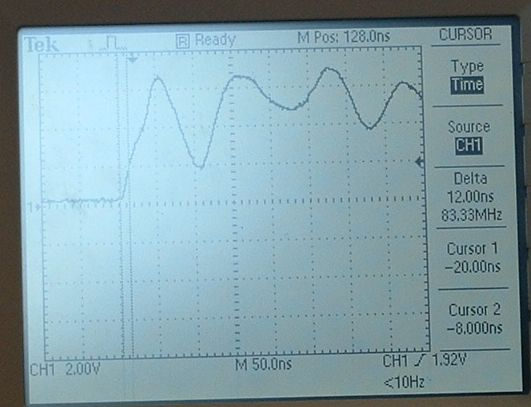
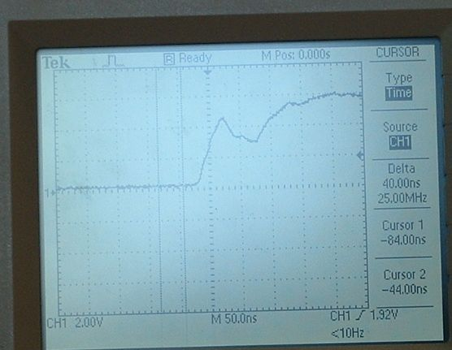
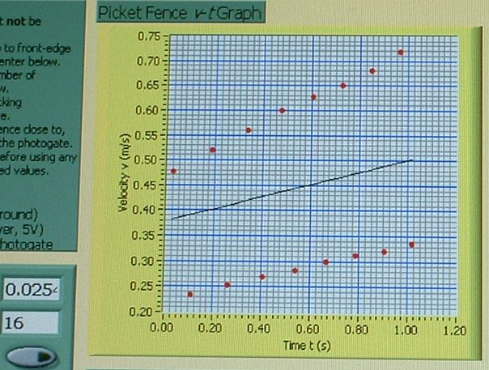

| Jill sent me and email today stating that earlier this week she had
one setup that was showing erroneous data. The load resistor was out. Once
she replaced the load resistor the setup worked. I was able to recreate
this consistently with that particular setup this afternoon.
The no load waveform looked like this:  
Note that in the unloaded case every edge is read as a falling edge so it was possible to catch 16 "falling" edges with only 9 pickets on the fence. 
See http://www.kwantlen.ca/science/physics/faculty/dpeirce/notes/photogate/ |